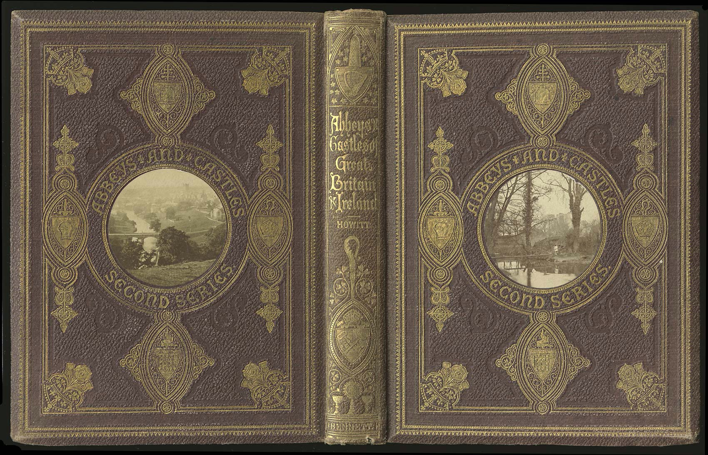
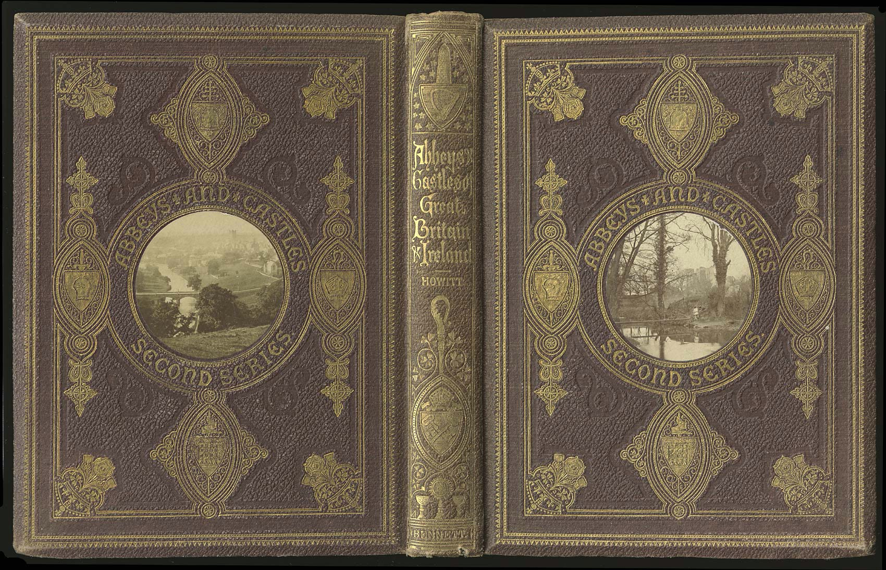
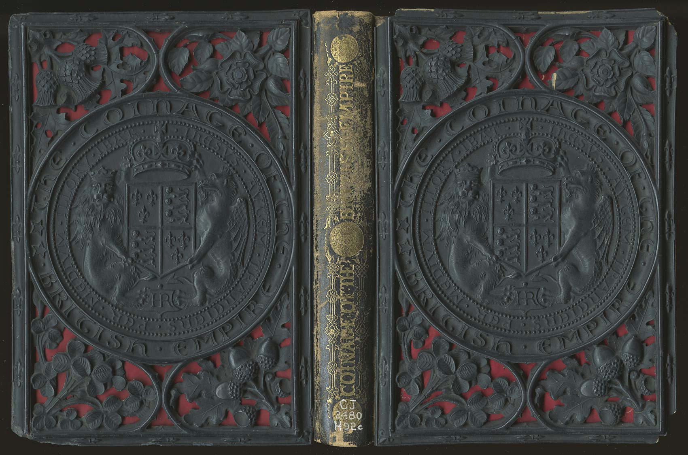

Читаем и насыщаемся. Чтение часто связывают с едой — пища духовная. Также часто и с лекарствами — книга излечит, поможет, избавит. Чудо — Доктор Айболит одним словом. А чудо, потому что поможет при глупости и отсутствии мыслей. Чтобы не превратиться в нечто, вырваться из лап рутины и бездействия, многим не хватает собственной силы воли, требуется толчок и мотивация. Самым доступным способом завести себя, особенно после прихода в нашу жизнь интернета, является книга. Достаем каждый до своей звездочки, стремимся к своей цели, МЕЧТАЕМ и ДЕЛАЕМ, а книга станет верным помощником. Если ночью вам не спится, Вот где Чейз вам пригодиться. Унесетесь с ветром вы Вместе с Митчелл в ваши сны. Если в джунглях не бывали, по пустыне не шагали, Не печальтесь, не грустите - "Вокруг света" посмотрите! Не хватает вам купюр, Чтоб одеться "от кутюр" В этом случае, быть может Нам журнал "Бурда" поможет! Книги ты прочтешь про то Как чинить свое авто, Как корову подоить, Мужа супом накормить, Как редиску посадить, Антресоли починить, Как ребенка воспитать, Можно в книге прочитать!

